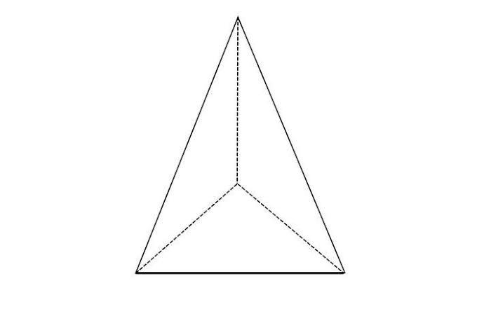

Hitung volume dan luas permukaan limas segiempat beraturan (alas persegi). Masukkan panjang sisi alas dan tinggi limas.
Isi sisi alas dan tinggi dengan angka lebih besar dari 0 ya.
Volume Limas
Luas Permukaan Limas
Catatan: perhitungan mengasumsikan limas segiempat beraturan (alas persegi, puncak tepat di atas titik tengah alas).